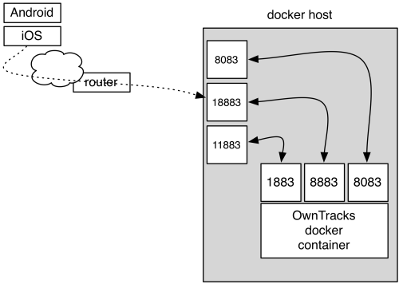
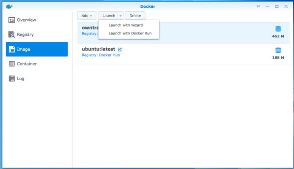
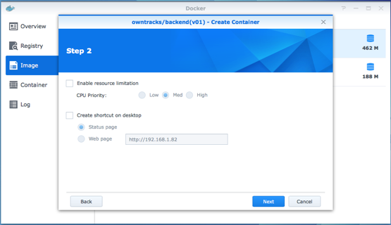
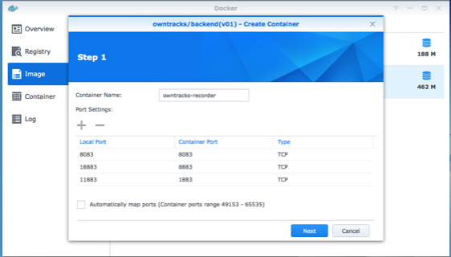
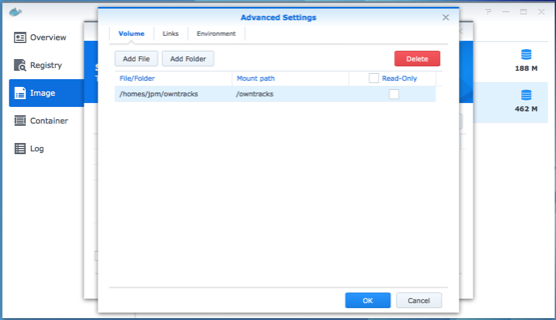
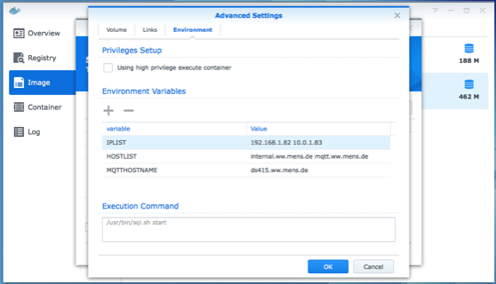
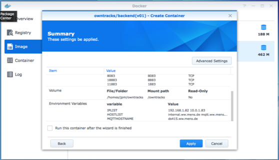
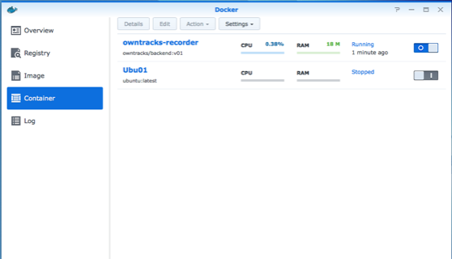
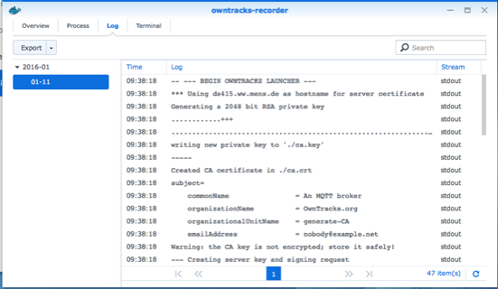

Recorder
The OwnTracks Recorder is a lightweight program for storing and accessing location data published via MQTT by the OwnTracks apps. It is a compiled program which is easily to install and operate even on low-end hardware, and it doesn't require an external database.
Docker
We have an experimental Docker image which you can use to launch the Recorder and its associated Mosquitto broker. The image expects a volume which you mount into it into which it will write persistent data. Furthermore, you pass environment variables into the container at first launch with which TLS certificates are created with subject (and subjAltNames) according to your preference.

As an example, let's assume the host on which the Docker container will run has two IP addresses, 192.168.1.82 and 10.0.1.83. We will also assume that you want the MQTT port on the host to be 11883 and its TLS port to be 18883. Let's further assume that one of these addresses is DNS accessible as ds415.ww.mens.de and the other as mqtt.ww.mens.de. We want the TLS certificates for the container's Mosquitto broke to contain subjAltNames for these, so we will proceed as follows:
- Create a directory which will be mounted into the container for persistent data:
mkdir /var/owntracks, say. - Launch the Docker container with a script such as this one
#!/bin/sh
docker run -v /var/owntracks:/owntracks -p 11883:1883 -p 18883:8883 -p 8083:8083 \
--name owntracks-recorder \
--hostname ds415.ww.mens.de \
-e MQTTHOSTNAME="ds415.ww.mens.de" \
-e IPLIST="192.168.1.1 192.168.1.82" \
-e HOSTLIST="mqtt.ww.mens.de ds415.ww.mens.de" \
owntracks/recorderd
That should download the Docker image (if necessary) and launch a container accordingly. At first run, the TLS certificates are created in the /owntracks volume (which was mounted onto /var/owntracks on the host). The host's directory will also contain a mosquitto/ directory which Mosquitto's configuration file, and the Recorder will use /owntracks/recorder/ as its persistent storage.
The above script will surface the port numbers as follows:
- MQTT will be on 11883
- MQTT over TLS on 18883
- and the Recorder's Web interface on 8083
You can assign these as you wish. Recall, that if you use our example, your OwnTracks apps will also have to access 18883 over TLS (instead of the default 8883 over TLS).
You may want to modify the default ACLs under owntracks/mosquitto/mosquitto.acl. For more please check Broker Configurations.
Exploring
If you want to see what's going on within the container, try launching an MQTT subscriber: first obtain the container's ID:
docker ps
CONTAINER ID IMAGE ...
5c8800a4ab78 owntracks/recorderd ...
Then, say, point mosquitto_sub to the broker from within the container:
docker exec -ti 5c8800a4ab78 mosquitto_sub -d -v -t '#'
Synology
A number of Synology devices with newer DSM support Docker; please refer to the original documentation to determine if yours has Docker support. If it does, this page describes how to use Docker. Once you've installed the package, you can proceed to download the Recorder image (search for owntracks-recorder; the image you want is called owntracks-recorderd with a trailing d on it) and launch a container. (This was tested on DSM 5.2.)
Launch container creation with the wizard, and give the container a name, e.g. owntracks-recorder.

Leave the settings in Step 2 as they are.

Add the TCP ports for MQTT (plain), MQTT (over TLS), and the Recorder's HTTP interface.

In the Volume tab, add a host folder which will be mounted into the container. Here we've chosen /home/jpm/owntracks which we first created with DSM's file manager.

In the Environment tab add the variables which will be exported into the container. Note that IPLIST and HOSTLIST (both of which are optional) take a space-separated list of values.

Check everything and press Apply to have the container created.

The container can then be launched by pressing the "on" switch.

The Docker container log will show console output.

The Recorder running on the Synology DiskStation will be accessible via the host port numbers you configured (see above for more information).